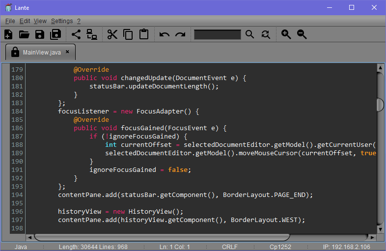
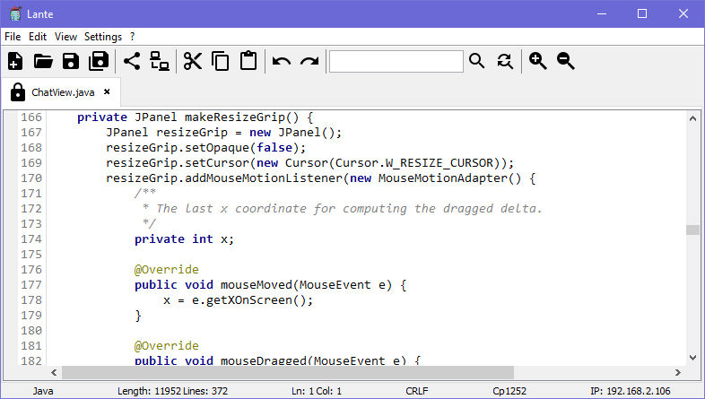
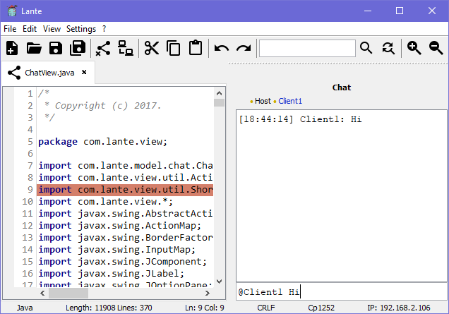
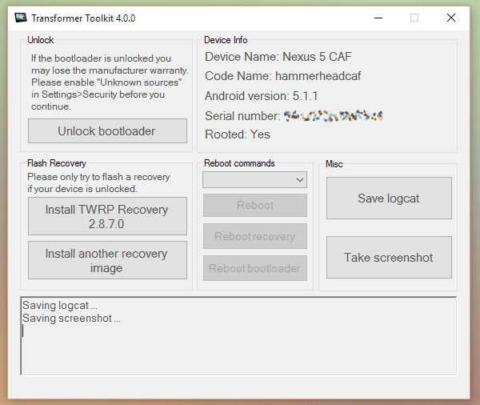
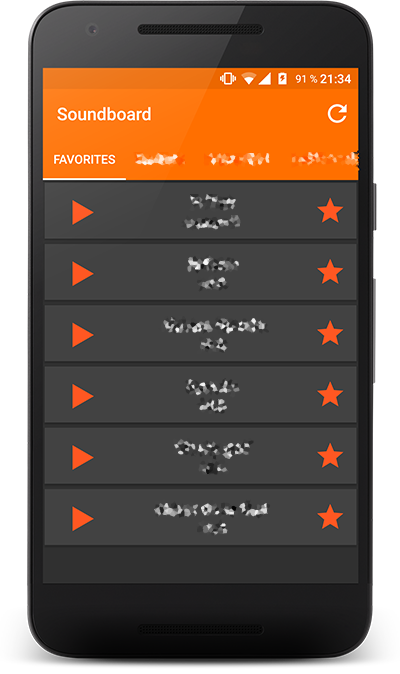
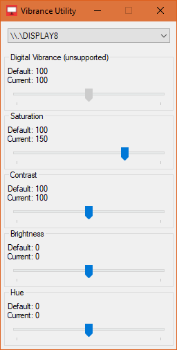
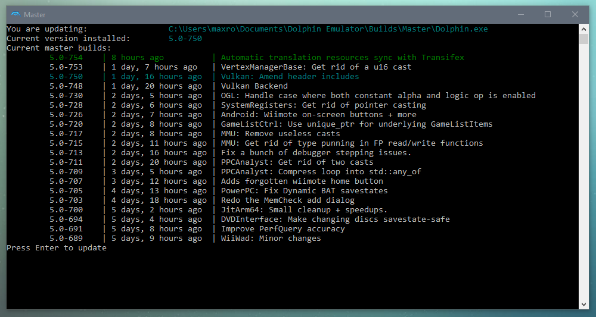
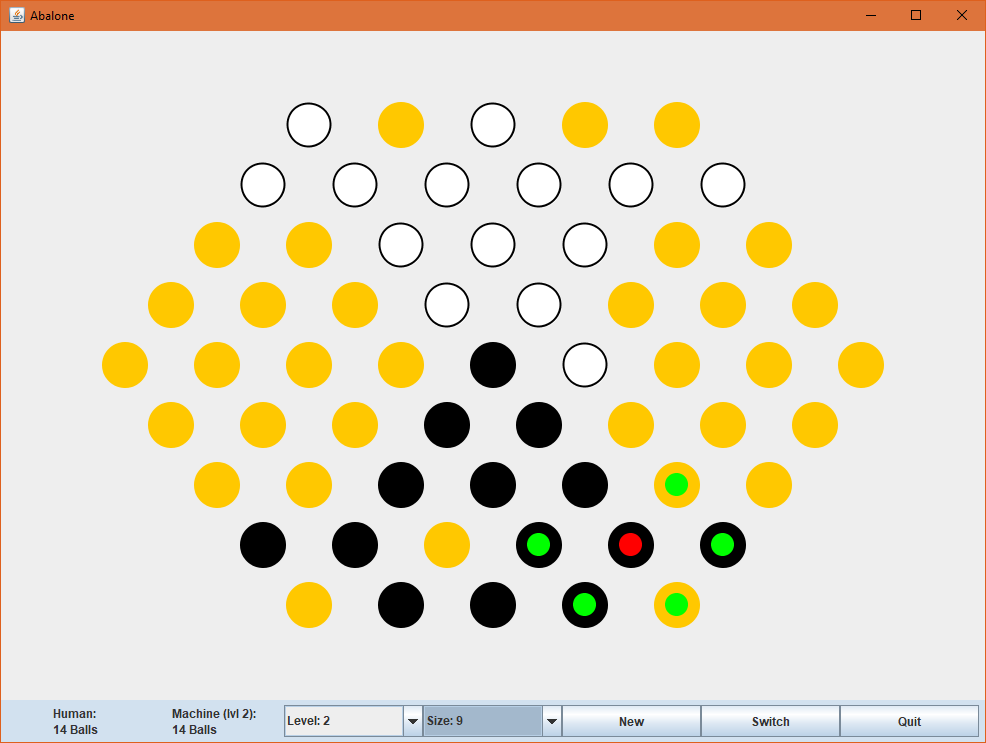
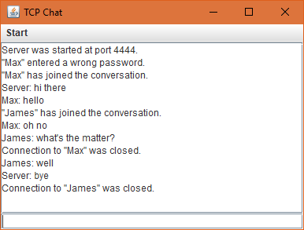

Projects
CyanogenMod Themes
Themes for CyanogenMod 12.x and 13 available on Google Play
- Support for Android Lollipop and Marshmallow
- Vector graphics
- Shared Android resource elements
- Deployment of slightly different versions
Lante
A Local Area Network Text Editor for Windows, Linux and OSX where people can work together.
One user hosts a document protected with a password and others can connect if they know the password.
- Written in Java 8
- Uses Swing for the UI
- Unit test with JUnit5
- Uses RSyntaxTestArea
- Uses Jackson
- Encrypted socket communication
- Custom file format which stores inline comments and the document history
- Custom keyboard shortcuts
- English and German translations with English spellchecker
Dark theme
Light theme
Chat
History

Transformer Toolkit
A toolkit written in .NET for the Asus TF300T, TF700T, ME301T and the Nexus 5 (CAF)
- Written in C#
- Uses WPF for the UI
- Communication with Android devices trough ADB
- Download device specific recovery images from Google Drive
- Automatic update trough Google Drive
Soundboard
Android app playing sound files from storage
- Written in Java
- Add sounds as favorites
- Dynamically adds tabs and cards for sounds
- Uses Android support library
- Uses vector compat library
Vibrance Utility
A Win32 application to change the digital vibrance of AMD and Nvidia graphic cards.
- Written in C++
- Uses AMD Display Library
- Uses Nvidia NvAPI
Dolphin Updater
A script which updates your Dolphin Emulator installation
- Written in Python
- Beatiful Soup library for parsing html
- Colorama library for console output formating
- Fetches available versions from the official Dolphin website and Dropbox
python Dolphin.py [-p path_to_dolphin_exe]Dolphin-Updater.exe [-p path_to_dolphin_exe]Abalone
A Java abalone board game where the player can play against the AI.
- Written in Java
- Uses Swing for the GUI
TCP Chat
A chat program to communicate with other instances of the program.
- Written in Java
- Uses Swing for the GUI
- Uses TCP sockets to communicate with other instances
- Multiple clients can join a server
- A password can be set to protect the server
This website
- Static HTML5 hosted on GH Pages
- CSS3 flex box
- CSS3 media queries for responsive design
- CSS3 animations
- Automation and deployment with Gulp
- Optimization of all HTML, CSS, JS, PNG and SVG files
DirDiff
Save checksums of all files in the source directory to the SFV file.
Compare an SFV file with the source directory to see the changed files.
Copy the changed files in the source directory to the target directory.
python DirDiff.py source sfv_path -t targetDiffCopy
A python script for syncing source and backup directory (e.g. generate a backup of your music files)
python DiffCopy.py source backup